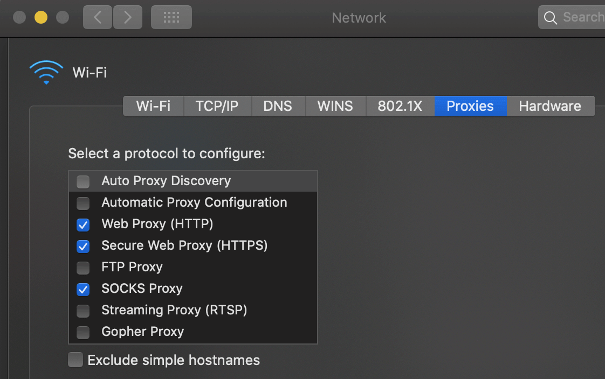

macOS 使用终端命令设置系统代理
在平时使用中，我一般是在浏览器内设置代理服务器，还有就是终端设置了代理切换脚本来实现快速切换，系统默认没有代理。关于 macOS/Windows 下设置终端代理可以参考我之前的文章：https://blog.niekun.net/archives/97.html
如果想要设置系统级的代理，需要在 system preference - network - proxies 里设置，常用的需要设置 http/https/socks 代理，基本覆盖大多数应用的流量了：

但是每次需要让其他应用走代理时都要进入系统设置项里打开代理开关很麻烦，可以通过设置 terminal 命令来实现快速切换。
networksetup
这里需要使用的命令是 networksetup，它可以查看及设置系统网络配置。
man page：https://www.unix.com/man-page/osx/8/networksetup/
查看设备可用的网络服务：
[email protected] ~ % networksetup -listallnetworkservices
An asterisk (*) denotes that a network service is disabled.
Apple USB Ethernet Hub
iPhone USB
Wi-Fi
Bluetooth PAN
Thunderbolt Bridge可以看到设备支持的有线和无线网络服务，后续设置中需要使用对应的服务名。
查看各个网络服务的端口名：
[email protected] ~ % networksetup -listallhardwareports
Hardware Port: Wi-Fi
Device: en0
Ethernet Address: a0:99:9b:04:a6:9d
Hardware Port: Bluetooth PAN
Device: en3
Ethernet Address: a0:99:9b:04:a6:9e
Hardware Port: Thunderbolt 1
Device: en1
Ethernet Address: 82:13:07:10:b9:80
Hardware Port: Thunderbolt 2
Device: en2
Ethernet Address: 82:13:07:10:b9:81
Hardware Port: Thunderbolt Bridge
Device: bridge0
Ethernet Address: 82:13:07:10:b9:80
VLAN Configurations
===================在后续的设置中会用到 device 名称，可以用以上命令来查询。
查看某个网络服务的信息：
[email protected] ~ % networksetup -getinfo Wi-Fi
DHCP Configuration
IP address: 192.168.123.25
Subnet mask: 255.255.255.0
Router: 192.168.123.1
Client ID:
IPv6: Automatic
IPv6 IP address: none
IPv6 Router: none
Wi-Fi ID: a0:99:9b:04:a6:9d查看系统记录的可连接的无线信号，可以使用命令来查看，需要用到上面得到的 device name：
[email protected] ~ % networksetup -listpreferredwirelessnetworks en0
Preferred networks on en0:
zhang_4lou
Phicomm_A196D8
TP-LINK_27BB
MERCURY_F610
iPhone (MISS)
Marco Nie’s 8
Office_Diagnosis查看当前连接的无线接入点名称：
[email protected] ~ % networksetup -getairportnetwork en0
Current Wi-Fi Network: My2.4G关闭无线连接：
networksetup -setairportpower en0 off
打开无线连接：
networksetup -setairportpower en0 on
查询当前无线连接是否打开状态：
[email protected] ~ % networksetup -getairportpower en0
Wi-Fi Power (en0): On
设置系统 http 代理：
networksetup -setwebproxy networkservices address port
设置系统 https 代理：
networksetup -setsecurewebproxy networkservices address port
设置系统 socks 代理：
networksetup -setsocksfirewallproxy networkservices address port
打开/关闭系统代理：
networksetup [-setwebproxystate | -setsecurewebproxystate | -setsocksfirewallproxystate] networkservices [on | off]
应用
上面介绍的常用的 networksetup 命令，下面介绍具体如何设置系统代理。这里以 Wi-Fi 网络服务举例。我的 http 代理地址为：127.0.0.1:1082，socks 代理地址为：127.0.0.1:1080。
首先设置代理地址：
networksetup -setwebproxy Wi-Fi 127.0.0.1 1082
networksetup -setsecurewebproxy Wi-Fi 127.0.0.1 1082
networksetup -setsocksfirewallproxy Wi-Fi 127.0.0.1 1080以上设置只需要设置一次，以后使用只需要执行打开/关闭代理操作即可。
打开系统代理：
networksetup -setwebproxystate Wi-Fi on
networksetup -setsecurewebproxystate Wi-Fi on
networksetup -setsocksfirewallproxystate Wi-Fi on关闭系统代理：
networksetup -setwebproxystate Wi-Fi off
networksetup -setsecurewebproxystate Wi-Fi off
networksetup -setsocksfirewallproxystate Wi-Fi off可以在终端执行上述命令，然后打开系统代理设置界面验证是否设置成功。
设置 alias 快捷命令
如果需要频繁的打开/关闭代理，每次都需要输入以上命令比较麻烦，比较好的方法是设置 alias。关于 alias 我在macOS/Linux/windows设置终端 proxy 代理里有详细介绍。
编辑 ~/.bash_frofile 添加如下并保存文件：
alias pset='networksetup -setwebproxy Wi-Fi 127.0.0.1 1082 && networksetup -setsecurewebproxy Wi-Fi 127.0.0.1 1082 && networksetup -setsocksfirewallproxy Wi-Fi 127.0.0.1 1080'
alias psystem='networksetup -setwebproxystate Wi-Fi on && networksetup -setsecurewebproxystate Wi-Fi on && networksetup -setsocksfirewallproxystate Wi-Fi on'
alias upsystem='networksetup -setwebproxystate Wi-Fi off && networksetup -setsecurewebproxystate Wi-Fi off && networksetup -setsocksfirewallproxystate Wi-Fi off'更新缓存，macOS 终端使用的是 zsh，所有要先在 ~/.zshrc 里添加一句 source ~/.bash_profile，具体查看我上面提到的文章：
source ~/.zshrc
设置完成后，执行 pset 设置代理地址，执行 psystem 打开系统代理，执行 upsystem 关闭系统代理。
参考连接：
http://support.moonpoint.com/os/os-x/networksetup-wifi.php
https://superuser.com/questions/316502/how-to-change-proxy-setting-using-command-line-in-mac-os